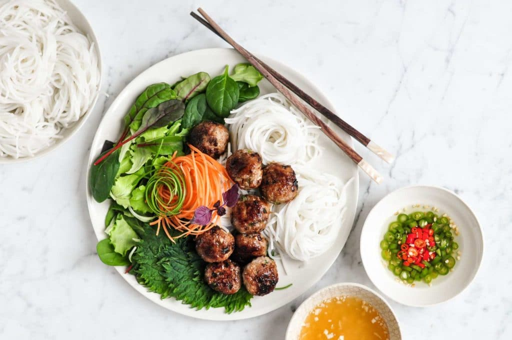

VIETNAMESE MEATBALLS
Introducing Bun Cha, the famous caramelised pork meatballs from the stress of Hanoi. Traditional Vietnamese food, made at home! This is an easy Vietnamese recipe that anyone can make that’s full of flavour. No need to hunt down obscure ingredients at an Asian store!
Serve it over vermicelli noodles with Vietnamese Nuoc Cham Sauce and your fresh vegetables of choice.

INGREDIENTS
Fer Da MeetBullz:
- 250 – 300 g/8 – 10 oz pork mince
- 1 tbsp fish sauce
- 2 tsp white sugar
- 1/3 cup finely chopped green onions / scallions
- 1 clove garlic
- Pinch of white pepper and salt
- 2 tsp lemongrass paste or fresh finely chopped
- 1 1/2 tbsp oil
NUOC CHAM (Vietnamese Dressing)
- 3 tbsp white sugar
- 3 tbsp fish sauce
- 2 tbsp rice wine vinegar
- 2 tbsp lime juice
- 1/3 cup water
- 1 birds eye chilli seeded and finely chopped
- 3 or more cloves of garlic M I N C E D
SERVING
- 100 g / 3.5 oz vermicelli noodles
- Big handful beansprouts
- Few lettuce leaves (or none, why did I even suggest that? Lmao, Trash tier)
- Julienned carrot and white radish
- Handful of coriander/cilantro sprigs
- Sliced red chilli
INSTRUCTIONS
- Sauce: Mix ingredients. Set aside 10 minutes+
- Noodles: Pour over boiling water and soak per packet directions. Drain, set aside.
- Meatballs: Mix all ingredients except oil until combined.
- Shape into 6 mini hamburger patties with your hands.
- Heat oil in a skillet over medium high heat. Add patties and cook for 2 1/2 minutes or until golden. Flip, cook 2 minutes then remove.
Fellas... Assemble...
- Place noodles in bowl. Top with a handful of beansprouts, wedge in lettuce, carrots and radish in.
- Place meatballs on top, top with coriander and mint.
- Spoon over a generous amount of Sauce (it’s supposed to be like a soup broth), eat and be happy!